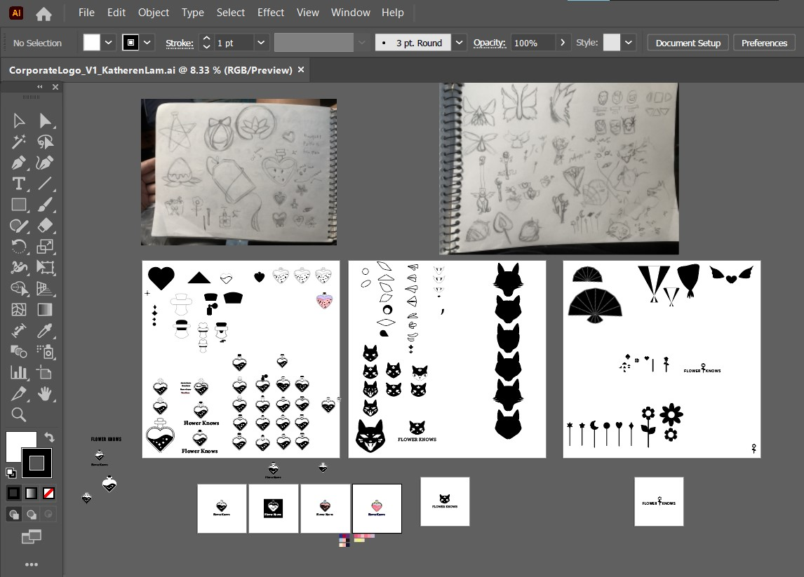
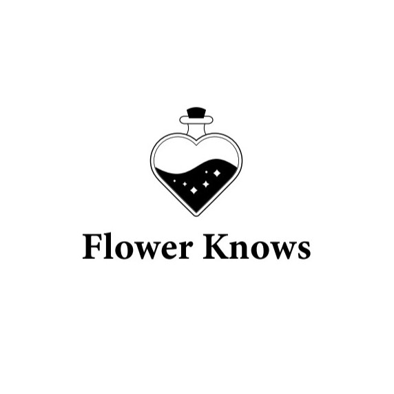
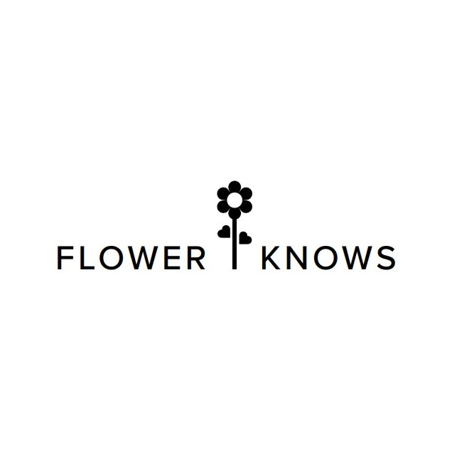
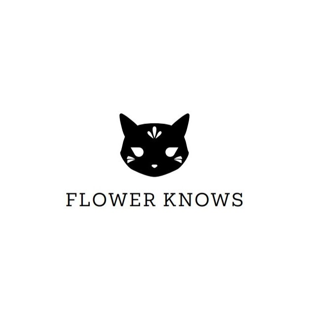

Coroporate Logo Redesign
Flower Knows

A Chinese makeup brand with fantastical and complex adornment taking influence from Asia and Europe.
In the design process, I created a straight forward logo of a flower which began as wands and bouquets. I also experimented with a fox mask inspired by the story of nine tailed foxes.
My final design is a heart shaped potion bottle inspired by the idea of fairytales and transforming one's apperance.


